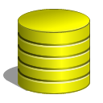

מדריך בסיסי למסדי נתונים
שמעתן פעם את המשפט "ידע זה כוח"? היום, רוב המידע שמניע את העולם הדיגיטלי, בין אם אלה סרטים בנטפליקס, הודעות בווטסאפ או הזמנות בוולט — נשמר ומנוהל במסדי נתונים.
מסד נתונים מאפשר לשמור מידע בצורה מסודרת, אבל הכוח האמיתי מגיע כשאנחנו יודעות לשאול אותו שאלות חכמות.
במדריך למידה זה תלמדו איך לבנות מסד נתונים משלכן ב‑Google Sheets, ואיך לכתוב "שאילתות" — כלומר, הוראות שמבקשות מידע מהטבלה.
זה פשוט, זה כיף, וזה הצעד הראשון לעולם שבו אתן שולטות במידע.